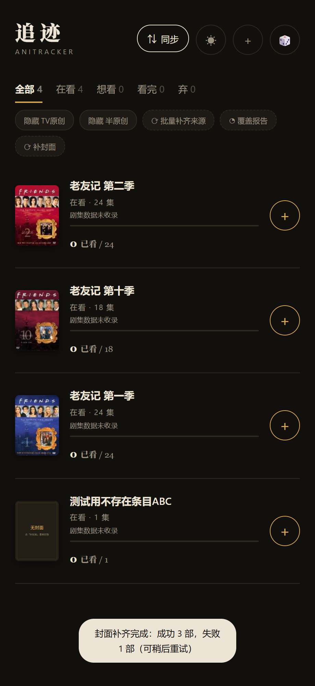

《老友记》及全部无封面条目的根因分析 · 附修复原理
用户反馈：追迹里《老友记》以及其它若干条目没有封面；详情页同时显示「暂无剧集数据 · 点此重试自动拉取（需关联 Bangumi）」。
复现：按三种常见来源（Bangumi 搜索添加 / 手动添加 / B站门户导入）构造同类条目 —— 除「Bangumi 搜索添加」外，其余来源均可稳定复现「无封面」。《老友记》这类本地来源条目即命中此问题。
封面数据存于浏览器本地 tr_shows[].cover（正常应为 96×128 本地 dataURL）。逐路径排查：
| # | 路径 | 代码位置 index.html | 行为 | 后果 |
|---|---|---|---|---|
| R1 | 手动添加 | manualAdd() | 不写 cover 字段 | 永远无封面 |
| R2 | B站门户导入 | syncFromPortal() | 存 B站（hdslb）外链 | 外链失效/防盗链 → 占位 |
| R3 | 内置库添加 | addLibFromSearch() | 未携带库内 cover 字段 | 永远无封面 |
| R4 | 在线搜索添加 | bgmAttach() → cacheCover() | 唯一抓封面的路径；失败回退远程 URL（http 在 https 页被拦） | 后续加载失败 → 占位 |
| R5 | 关联 Bangumi | assocPick() | 只补剧集、不补封面 | 关联成功封面仍缺 ← 老友记命中 |
| R6 | 失败静默 | cacheCover() 调用点 | 失败被 try/catch 吞掉 | 无提示、无重试、无入口 |
补充：v2.5.4 已做到「加载失败显示暖色占位图」，但没有重新拉取的入口 —— 用户看到占位后没有恢复路径。
SEARCH_ALIAS_GROUPS）。不逐条猜测条目来路，而是让系统对所有「结果态」统一收敛到「本地 dataURL 封面」：

| 证据 | 位置 |
|---|---|
| 复现与修复走查（真网） | verification/walkthrough-v260.json + assets/walkthrough-*.png |
| 回归测试 19/19 | verification/regression-19of19.json |
| 改动 diff | verification/changes-v2.6.0.diff |
| 视觉质检 | verification/qc-visual-review.md |